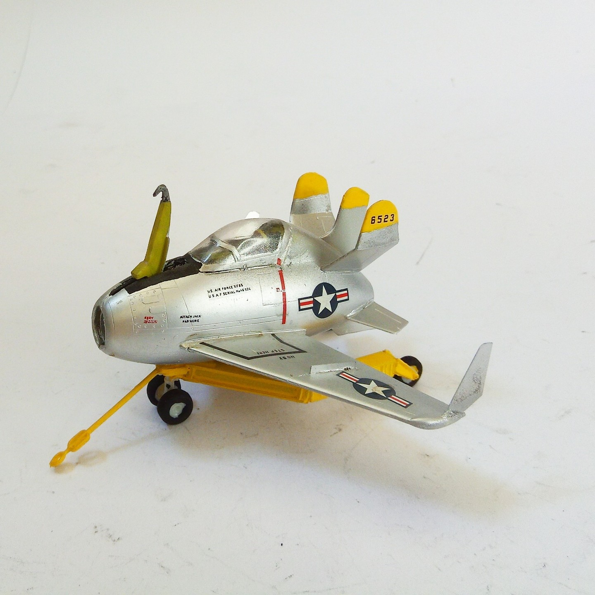
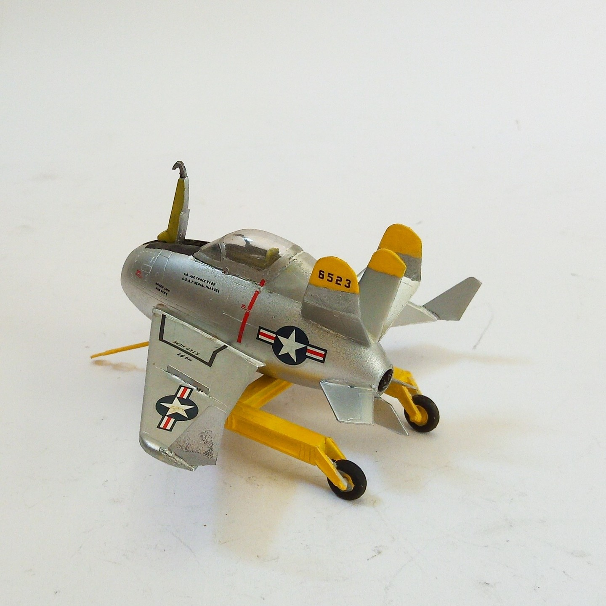

Aerei · scale model archive
McDonnell XF85 Goblin
McDonnell XF85 Goblin — Kit: MPM, Scale: 1/72. Prototype A/C 1948, cute tiny parasite fighter #1/72 #MPM

Photo gallery

English description
Prototype A/C 1948, cute tiny parasite fighter
#1/72 #MPM
Descrizione italiana
Prototipo aereo 1948, grazioso minuscolo parasite figther.